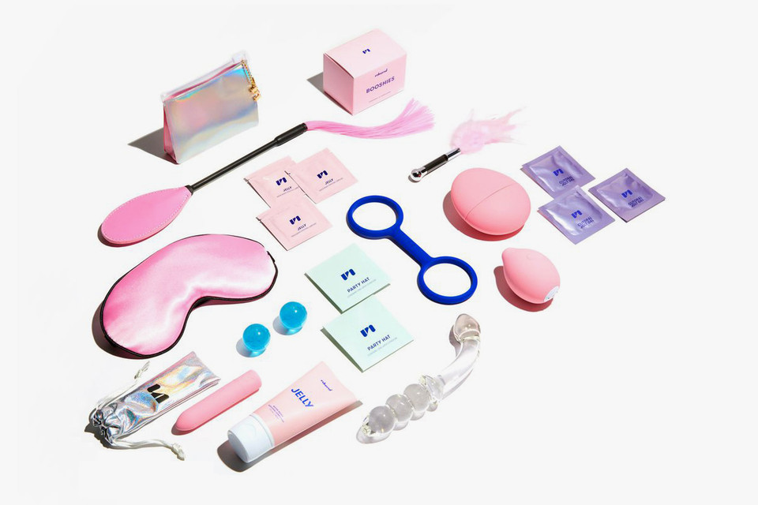

“Historically, sex toys were designed by men because, well, what wasn’t?” laughs Polly Rodriguez, co-founder and CEO of sexual wellness company Unbound. “As a result, the majority of vibrators took a phallic form, which is frustrating because the shape of the object has little to do with its ability to arouse. Research shows that 70 percent of women require clitoral stimulation in order to orgasm." But it wasn't just the limited offerings on the market that frustrated Rodriguez prior to launching her own endeavor—the unsavory experience of shopping for them did, too.
A decade ago at 21, Rodriguez was diagnosed with stage IIIC colorectal cancer. And while she was fortunate enough to beat it, the first part of the treatment included radiation therapy, which caused her to suffer early menopause. The silver lining of it all? The experience was a powerful catalyst that changed her relationship to her body forever. “[Cancer] forced me to make a decision about whether I would continue to fear my body or learn to appreciate it,” she explains. “I think anyone who has survived any form of mental or physical illness faces that decision. Those who choose to embrace it, in all its flawed forms, are often more body-positive and sex-positive for it.”
Seeking comfort for menopausal dryness with lubricants, as well as sex toys for personal pleasure throughout her twenties, more often than not she'd end up at a seedy sex shop that, much like its inventory, left much to be desired. Recognizing a critical gap in the market, she and co-founder Sarah Jayne started Unbound in 2014, aiming to take vibrators, lubricants, and sex accessories mainstream through elevated design, body-safe materials, and accessible pricing. Further disrupting the market, two years later the company launched its first line of wearable sex accessories, which included bangle bracelets that doubled as handcuffs, a choker necklace designed to be repurposed as a whip, and earrings that could be used as nipple clamps. “As soon as they sold out, we knew we were on to something,” Rodriguez says.